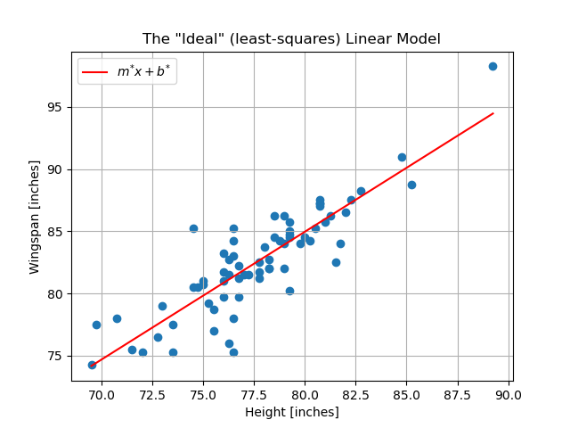
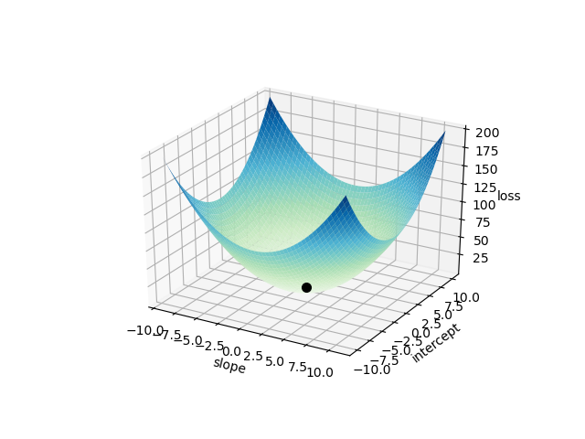
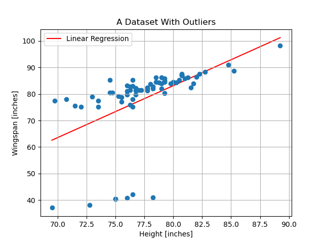

Baby Steps Towards Machine Learning: Linear Regression¶
It is time for us to roll up our sleeves and explore a simple data-modeling problem through regression analysis. Our objective here is to gain some experience devising a simple mathematical model to describe a pattern that we see manifest in data. Doing so will acquaint us with the following important terms and concepts:
Model: a mathematical function used to relate observed data to desired predictions or decisions about said observed data.
Model parameters: numerical values contained in our model that must be tuned so that our model faithfully describes important patterns in our data (i.e. so that it makes reliable predictions/decisions based on new observations).
Objective (a.k.a “loss”) function: a mathematical function that compares our model’s predictions against recorded data, and provides a measure of the quality of the predictions.
These points will form the foundation for our study of deep learning.
The meaning of “regression”:
The process of regression analysis involves estimating a mathematical function that most closely fits the patterns seen in one’s data. In this way, the important patterns that manifest in discrete and potentially noisy data points can be viewed as a “regression” to the form of a single, continuous function - the function that you produce is a so-called regression model of your data.
Modeling Wingspan Versus Height¶
Sports are a great source of data because they generate oodles of systematically collected data. Suppose that we are interested in modeling the relationship between a basketball player’s height and their wingspan (What is a wingspan? If you hold out your arms so that your body makes a “T” shape, your wingspan is the distance from the tip of one hand to the tip of the other hand). That is, given a new player’s height measurement we would like to compute an accurate prediction of their wingspan.
To begin this problem, we should find some data. Let’s take a look at some height and wingspan measurements taken of the 2019 NBA draftees.

This is a particularly nice introductory data-modeling problem for a couple of reasons:
We are only considering a single independent/observed quantity and one dependent/predicted quantity, thus we can visually summarize our data in a simple 2D plot.
Based off of this plot, we see a relatively clean linear pattern in our data, which makes the process of picking an appropriate mathematical model for this problem trivial.
Given the clear pattern, we are able to write down a simple equation to express the relationship between our observed data (height) and our desired predictions (wingspan).
This equation is our chosen model for the relationship between a player’s height and his wingspan. Here, \(x\) represents an input height, and the output, \(F(m, b; x)\), is the wingspan that is predicted by our model. The variables \(m\) and \(b\) are our model parameters – the slope and y-intercept of the line, respectively.
Note that the model parameters are separated from the input variable by a semicolon in the function signature in order to help distinguish between the nature of these variables. Namely, \(x\) represents an observed quantity that we have no control over (it is our observed data), whereas \(m\) and \(b\) are parameters whose values we must select so that our model produces accurate predictions.
Assuming that we are satisfied with restricting ourselves to this simple linear model, our objective is to determine the model parameter values that produce the “best fit” to our data (we will discuss what “best” means here). We will represent these ideal parameter values as \(m^*\) and \(b^*\). Once we have determined these values, our ideal linear model will look like so:

Obtaining this model will permit us to take a new height – one that is not in our dataset – and invoke our model to predict that individual’s wingspan.
Reading Comprehension: Know Your Limits
It is extremely important to consider biases and limitations in ones data, as these will inevitably manifest in the model that results from said data.
Based on the description of our data above, what might be some limitations or biases to our model? That is, should we expect that our model is good at predicting wingspans for any and all humans, or is a much more limited application of our model warranted?
Defining Success: The Method of Least Squares¶
What exactly do we mean when we say that we want to find the parameters for the line that “best fits” our data? It turns out that this is a rather nuanced question and that the answer depends on the nature of our data, how it was collected, and what the purpose of our model is.
Here, we will assume that our recorded data is free of outliers, e.g. measurements that were affected substantially by experimental error, and that our model will be used to provide predictions in contexts similar to the one in which the data was collected. Under these circumstances, it is appropriate to say that the “best fit” linear model is the one whose predictions minimize the sum of the squared-residuals from the recorded data. This isn’t as complicated as it might sound; let’s first understand what a “residual” is.

Our recorded data consists of \(N\) measurements: \(\big(x_n, y^{\mathrm{(true)}}_n\big)_{n=0}^{N-1}\). Datum-\(i\), \(\big(x_i, y^{\mathrm{(true)}}_i\big)\), is the height and wingspan of player-\(i\). Supposing we have some values picked out for our model’s parameters, \(m\) and \(b\), then our model’s predicted wingspan for player-\(i\) is
The so-called residual, or error, associated with this prediction is its difference from the measured (i.e. “true”) value:
Thus the “sum of squared residuals” is simply
Let’s write this sum of squared residuals, which we will denote as \(\mathscr{L}\), explicitly in terms of our model’s parameters,
Keep in mind that our measured data, \(\big(x_n, y^{\mathrm{(true)}}_n\big)_{n=0}^{N-1}\), is fixed – we only have control over the values of our model’s parameters \(m\) and \(b\). Our goal, then, is to find the values of \(m\) and \(b\) that minimize the sum of squared residuals; we will denote these optimal values as \(m^*\) and \(b^*\). Put succinctly, this approach to determining the desired values for our model’s parameters is known as the method of least squares.
The following mathematical notation says “\(m^*\) and \(b^*\) are the particular values for \(m\) and \(b\) that minimize \(\mathscr{L}\), for the fixed set of observed data \(\big(x_n, y^{\mathrm{(true)}}_n\big)_{n=0}^{N-1}\)”:
The red line plotted above is the line of slope \(m^*\) and \(y\)-intercept \(b^*\). The line with these parameters is the so-called line of least squares for our collected data – meaning that it is the line that minimizes \(\mathscr{L}\) – and it is what we consider to be the linear model that best fits our data. We will ultimately learn two methods for computing \(m^*\) and \(b^*\):
Solve for \(m^*\) and \(b^*\) exactly, via a “closed-form” solution
Solve for \(m^*\) and \(b^*\) approximately, via a numerical optimization scheme known as gradient-descent
Objective functions and minimizing “risk”
In the context of this problem, the sum of squared residuals (\(\mathscr{L}\)) is playing the roll of the so-called “objective function”. That is, our objective is to find model parameters that minimize this function. It is also common for people to refer to this as a “loss function”.
A common objective function for regression problems is the “mean squared-error”. Even though their names are quite distinct, the mean squared-error is nearly identical to the sum of squared residuals, but the mean of the squared residuals is taken instead of the sum. I.e.
This quantity, which is a measure of the average discrepancy our predictions against our available data, is sometimes referred to as “risk”. To seek out the model parameters that minimize this quantity, as we are, is to follow the empirical risk minimization principle from statistical learning theory. To put it succinctly, it argues that the least “risky” model (or, more formally, “hypothesis”) that we can use to make predictions in the real world is the one that makes the fewest mistakes against our available data.
Summary:
Given a data set consisting of \(N\) measurements, \((x_n, y^{\mathrm{(true)}}_n)_{n=0}^{N-1}\), we will try to describe the trends underlying the data using a linear regression; i.e. we will find the parameters a first-degree polynomial
such that the resulting function fits our data closely. It is common to refer to this function as being our “mathematical model” for our data. The parameters of this model are simply its slope (\(m\)) and its y-intercept (\(b\)). The input to our model, \(x\), is a piece of observed data. The output of this function, \(F(m, b; x)\), is our model’s prediction or decision made about that piece of observed data.
The method of least squares is to determine the values of \(m\) and \(b\) by minimizing the sum of the square-residuals between our observations and our linear model’s predictions:
We will see that there is a unique and exact solution to this problem. However, we will also benefit by studying an approximate numerical solution to this problem as well, which will inform our approach to solving more sophisticated problems in the area of machine learning.
Reading Comprehension: Building Intuition for the Sum of Squared Residuals
Consult the plot of the least squares linear model over our data. Considering that we know that the sum squared residuals is minimized for this line, do you expect that this sum is a positive value, a negative value, or zero?
Describe the spatial distribution of 2D data points that would yield a line of least squares whose sum of squared residuals is
a positive value
equal to zero
a negative value
Reading Comprehension: Baby’s First Regression:
Given a dataset consisting of only two measurements,
\(\mathrm{height}=72\;\mathrm{inches}\), \(\mathrm{wingspan}=78\;\mathrm{inches}\)
\(\mathrm{height}=76\;\mathrm{inches}\), \(\mathrm{wingspan}=82\;\mathrm{inches}\)
find the associated line of least squares. What is the sum of square residuals of the linear model for this data? (Hint: you can solve this without reading about solving the method for least squares - think basic mathematics!)
Linear Least Squares: A Closed-Form Solution¶
Our linear model and our objective function (the sum of squared residuals) are simple enough that we can solve for \(m^*\) and \(b^*\) exactly, by hand, to produce the line that is the best possible linear fit for our data (with respect to this particular objective function). For more complicated models, we will almost never have access to this sort of closed-form solution for the true ideal model parameters.
\(\mathscr{L}\) is a convex function – it is shaped like a bowl in the space of \(m\) and \(b\) (treating our observed data as constant), thus there is exactly one pair of \(m^*\) and \(b^*\) that minimizes \(\mathscr{L}\) for our data set. Obviously, the minimum occurs at the flat-bottom of this proverbial bowl.
The following is a plot of \(\mathscr{L}\big(m,b; \big(x_n, y^{\mathrm{(true)}}_n\big)_{n=0}^{N-1}\big)\) over a continuum of values for \(m\) and \(b\). The result is a bowl-like surface, where the bowl’s minimum – located at \((m^*, b^*)\) – is marked by a black dot. Note that the data \(\big(x_n, y^{\mathrm{(true)}}_n\big)_{n=0}^{N-1}\big)\) was “normalized” in order to make the plot look like this. Creating the plot using the raw data would have produced a surface that would look nearly flat along the \(b\) (“intercept”) axis. We will discuss this in detail later.

As mentioned in the primers on single-variable calculus and multivariable calculus sections, the location of this minimum occurs when the slope of \(\mathscr{L}\) is \(0\) in all directions; i.e. where \(\vec{\nabla}\mathscr{L} = \vec{0}\) .
Thus we want to solve solve the system of equations
Let’s expand the equation for our loss function, writing \(y_n\) instead of \(y^{\mathrm{(true)}}_n\) for readability’s sake:
Thus our system of equations is given by setting both derivatives of \(\mathscr{L}\) to zero
We can start by solving for \(b\) in the second equation, which gives us an expression in terms of \(m\)
where \(\bar{w}\) denotes the mean of a sequence \((w_n)_{n=0}^{N-1}\); i.e. \(\bar{w}=\frac{1}{N}\sum_{n=0}^{N-1}w_n\).
Now, substituting this expression for \(b\) into the first equation,
Rearraging terms, we find \(m\) to be
Note that the denominator of this equation is equivalent to \({N\mathrm{Var}[x]}\) (where \(\mathrm{Var}[x]\) is the variance – the square of the standard deviation – of \((x_n)_{n=0}^{N-1}\)). Thus we have arrived at the solution to this system of equations
The values \(m^*\) and \(b^*\) are known as the “ordinary least squares parameter estimates” for this data.
Reading Comprehension: A Picture is Worth A Thousand Words
Study the equations for \(m^*\) and \(b^*\); when are these equations undefined? Provide the most general description of \((x_i, y_i)_{i=0}^{N-1}\) for which this closed-form solution does not exist. Consider, from a geometric perspective, when these equations should fail to yield a unique solution.
Reading Comprehension: Ordinary Least Squares in Python
Using the equations expressing \(m^*\) and \(b^*\) in terms of our data \((x_n, y_n)_{n=0}^{N-1}\), complete the following function
def ordinary_least_squares(x, y):
"""
Computes the slope and y-intercept for the line that minimizes
the sum of squared residuals of mx + b and y, for the observed data
(x, y).
Parameters
----------
x : numpy.ndarray, shape-(N,)
The independent data. At least two distinct pieces of data
are required.
y : numpy.ndarray, shape-(N,)
The dependent data in correspondence with ``x``.
Returns
-------
(m, b) : Tuple[float, float]
The optimal values for the slope and y-intercept
"""
# YOUR CODE HERE
It is recommended that you write this function using vectorized operations (i.e. avoid writing explicit for-loops).
Once you have coded up your solution, test it by randomly drawing values of \(m\) and \(b\) for some line, and then randomly draw some \((x, y)\) pairs from this line and pass them to ordinary_least_squares - your function should return the same values for \(m\) and \(b\) as were used to generate the data.
Reading Comprehension: A Few Bad Apples Spoil The Bunch
What if one of the people taking the measurements didn’t understand what wingspan was? Suppose they thought that wingspan measured the distance from ones center to their out-stretch finger tip, and suppose that this person recorded roughly 10% of all of the data. That is, suppose that roughly one tenth of the wingspans are recorded at half of their appropriate values (around 40 inches).
First, draw on a piece of paper what this data, which contains such outliers, would roughly look like. Given that only 10% of the data are outliers, do you expect them to have a large effect on the linear model? Consider the relative size of the squared residuals associated with these outliers compared with the rest of the data. How would the impact of these outliers change if we used the magnitude (i.e. absolute value) of the residuals instead of their squares?
Hazarding a guess, draw the linear least squares model that would be produced by this data.
The takeaway here is to see that that the method of least squares has no ability to exclude outliers from the fitting process - the resulting model will minimize the sum of squared residuals over the entire data set.
For our toy problem, it would be trivial to see such dramatic outliers and to remove them by-hand before performing the method of least squares. That being said, for larger, more complicated datasets – especially when each datum exists in a high-dimensional space (e.g. an image) – detecting and removing outliers can be very challenging. Using an iterative random sample consensus (a.k.a RANSAC) to identify outliers is an elegant and popular approach to dealing with this problem.
Next Steps¶
The material laid our here enables us to find the linear model (i.e. its slope and \(y\)-intercept) that minimizes the sum of square residuals between our data and its predictions. The essential concepts of a “mathematical model”, “model parameters”, an “objective function”, and “empirical risk minimization” (as a strategy for finding our “best fit” model) that were presented here are all supremely relevant to our broader study of machine learning. The relation of these concepts to the process of fitting a linear regression is the same as their relation to more general mathematical models in machine learning, such as a neural network. Thus we have already made nice progress toward establishing a foundation for studying deep learning.
That being said, linear regression is not representative of more general approaches to mathematical modeling in that it affords us an exact solution for computing ideal values for our model’s parameters, given our dataset. As emphasized earlier, we will almost never have this luxury when we turn to more sophisticated mathematical models. So, next, we will proceed with our linear model as if we do not have access to this exact solution. Instead, we will learn how to use a method known as “gradient descent”, which is a procedure of numerical optimization, as an approximate way to find near-ideal values for our model’s weights. This will prove to be a very important algorithm for us to learn about because it is the engine that drives the “learning” in nearly all deep learning applications.
Before we tackle gradient descent for “training” our linear model, we should take some time to work with the dataset that we have been referring to throughout this section. In the following exercise notebook, we will get our hands on this NBA rookie dataset; we will familiarize ourselves with a powerful library called xarray, which provides us with NumPy-like arrays that support explicit coordinates, labels, and documentation for our data.
Reading Comprehension Exercise Solutions¶
Know Your Limits: Solution
It is extremely important to consider biases and limitations in ones data, as these will inevitably manifest in the model that results from said data.
Based on the description of our data above, what might be some limitations or biases to our model? That is, should we expect that our model is good at predicting wingspans for any and all humans, or is a much more limited application of our model warranted?
It is highly likely that our dataset is specialized to a degree that our linear model would not be good at predicting wingspans for the general population. This is a very small dataset consisting of only NBA draftees, meaning that these measurements are only taken from men, who reside in a narrow age bracket (roughly 19-25 years old), and who are likely much taller than the average person. Furthermore, it may well be that having an exceptional wingspan is advantageous to being basketball player, so this particular collection of people might have even been inadvertently selected for to have different height-wingspan proportions than the general population!
In this particular application, it would likely only be responsible to use this current model to predict wingspans for other professional (or semi-professional) basketball players. More data would need to be collected before we could reasonably suppose that this model has any further validity.
Building Intuition for the Sum of Squared Residuals: Solution
Consult the plot of the least squares linear model over our data. Considering that we know that the sum squared residuals is minimized for this line, do you expect that this sum is a positive value, a negative value, or zero?
Describe the spatial distribution of 2D data points that would yield a line of least squares whose sum of squared residuals is
a positive value
equal to zero
a negative value
Notice that that, because we are summing the squares of the residuals, that we will always end up with a non-negative result; i.e. we do not care whether a prediction is an over-estimate or an under-estimate of the true value, all that matters is the magnitude of the discrepancy between the prediction and the associated true value. Therefore it is impossible for the sum of squared residuals to produce a negative value. Furthermore, the sum of squared residuals can be zero for our linear model only if the data itself falls perfectly along a line without any deviation.
Thus for all “realistic” distributions of data, our least squares linear model will still produce a positive sum of squared residuals.
Baby’s First Regression: Solution:
Given a dataset consisting of only two measurements,
\(\mathrm{height}=72\;\mathrm{inches}\), \(\mathrm{wingspan}=78\;\mathrm{inches}\)
\(\mathrm{height}=76\;\mathrm{inches}\), \(\mathrm{wingspan}=82\;\mathrm{inches}\)
find the associated line of least squares. What is the sum of square residuals of the linear model for this data?
Two points uniquely define a line, thus the line of least squares is simply the line that passes through these two points; its sum of squared residuals will be zero - the smallest possible value!
Let’s simply solve for the line using the standard point-slope form:
\begin{equation} y - y_1 = \frac{y_1 - y_0}{x_1 - x_0}(x - x_1) \end{equation}Plugging in our given data, \begin{align} y - 82\;\mathrm{inches} &= \frac{82\;\mathrm{inches} - 78\;\mathrm{inches}}{76\;\mathrm{inches} - 72\;\mathrm{inches}}(x - 76\;\mathrm{inches})\\ y - 82\;\mathrm{inches} &= 1(x - 76\;\mathrm{inches})\\ y &= x + 6\;\mathrm{inches}\\ \end{align}
Thus the parameters for our line of least squares is \(m^*=1\) and \(b^* = 6\;\mathrm{inches}\).
A Picture is Worth A Thousand Words: Solution
Study the equations for \(m^*\) and \(b^*\); when are these equations undefined? Provide the most general description of \((x_i, y_i)_{i=0}^{N-1}\) for which this closed-form solution does not exist. Consider, from a geometric perspective, when these equations should fail to yield a unique solution.
As mentioned in the derivation of the ordinary least squares solution, the denominator for \(m^*\) is the square standard deviation (a.k.a “variance”) of \((x_n)_{n=0}^{N-1}\). Thus any data set that fails to have two or more data points with distinct \(x\) values will fail to yield a solution via OLS.
Geometrically speaking, this means that any data set with one or fewer data points, or, whose data points fall along a vertical line, will be incompatible with the ordinary least squares solution laid out above.
Ordinary Least Squares in Python: Solution
import numpy as np
def ordinary_least_squares(x, y):
"""
Computes the slope and y-intercept for the line that minimizes
the mean square error of mx + b and y, for the observed data
(x, y)
Parameters
----------
x : numpy.ndarray, shape-(N,)
The independent data. At least two distinct pieces of data
are required.
y : numpy.ndarray, shape-(N,)
The dependent data in correspondence with ``x``.
Returns
-------
(m, b) : Tuple[float, float]
The optimal values for the slope and y-intercept
"""
N = x.size
m = (np.matmul(x, y) - x.sum() * y.sum() / N) / (np.matmul(x, x) - (1 / N) * x.sum() ** 2)
b = y.mean() - m * x.mean()
return m, b
Writing a test for our code
from math import isclose
import random
def testing_ols_manual():
# draw random slope and intercept
m_expected = 20 * (random.random() - 0.5) # random number in [-10, 10]
b_expected = 20 * (random.random() - 0.5) # random number in [-10, 10]
# draw random x values
num_points = random.randint(2, 100)
x = 100 * (np.random.rand(num_points) - 0.5) # random numbers in [-50, 50]
y = m_expected * x + b_expected
m_actual, b_actual = ordinary_least_squares(x, y)
# check results
# these "assertions" will raise an error if these checks ever return `False`
assert isclose(
m_actual, m_expected
), f"expected m={m_expected}, got {m_actual} (num-points={num_points})"
assert isclose(
b_actual, b_expected
), f"expected b={b_expected}, got {b_actual} (num-points={num_points})"
Running the test 100 times:
for i in range(100):
testing_ols_manual()
We can, instead, use the Hypothesis testing library to write a much nicer, and more informative test:
from math import isclose
from hypothesis import given
import hypothesis.strategies as st
@given(
m_expected=st.floats(-10, 10),
b_expected=st.floats(-10, 10),
x=st.lists(st.floats(-100, 100), min_size=2, unique=True).map(np.asarray),
)
def testing_ols_hypothesis(m_expected, b_expected, x):
y = m_expected * x + b_expected
m_actual, b_actual = ordinary_least_squares(x, y)
# check results
# these "assertions" will raise an error if these checks ever return `False`
assert isclose(m_actual, m_expected), f"expected m={m_expected}, got {m_actual}"
assert isclose(b_actual, b_expected), f"expected b={b_expected}, got {b_actual}"
By default, Hypothesis will automatically run 100 test cases for us when we run this function. If it finds a failing case, it will report to us the simplest failing case that it can find:
testing_ols_hypothesis()
A Few Bad Apples Spoil The Bunch: Solution
What if one of the people taking the measurements didn’t understand what wingspan was? Suppose they thought that wingspan measured the distance from ones center to their out-stretch finger tip, and suppose that this person recorded roughly 10% of all of the data. That is, suppose that roughly one tenth of the wingspans are recorded at half of their appropriate values (around 40 inches).
First, draw on a piece of paper what this data, which contains such outliers, would roughly look like.
The following shows the data set modified to contain the outliers described above; it also includes the linear least squares model

Given that only 10% of the data are outliers, do you expect them to have a large affect on the linear model? Consider the relative size of the squared residuals associated with these outliers compared with the rest of the data. How would the impact of these outliers change if we used the magnitude (i.e. absolute value) of the residuals instead of their squares?
Given that these outliers are stark and that we are concerned with minimizing the squared residuals, these have an out-sized impact on the least squares solution that we find. The skew created by these outliers would be less dramatic if we depended only linearly on the magnitude of their residuals instead of quadratically.